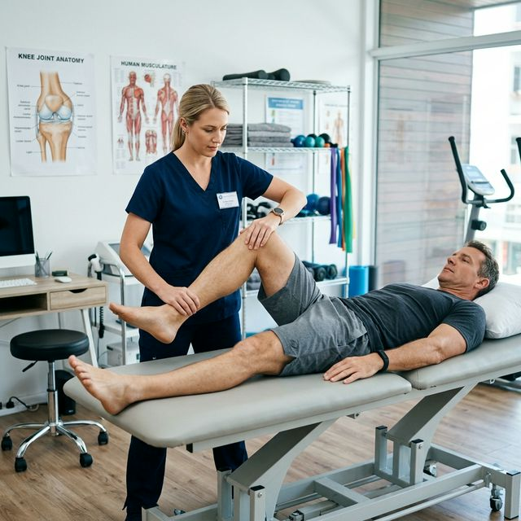

Post-Surgery Rehabilitation: Mastering Your Path to Recovery in Wayanad

Successful surgery is only half of the journey. The outcome of your orthopedic surgery in **Wayanad** depends immensely on your commitment to a structured physiotherapy plan. A "perfect" surgery can still lead to a poor outcome if the surrounding muscles aren't rehabilitated properly.
At Physio Dynamics Panamaram, we work hand-in-hand with orthopedic surgeons to ensure your recovery is smooth, safe, and effective. We utilize specific protocols for each surgery type to optimize healing timelines.
The 3 Key Phases of Post-Surgery Growth
The goal is to control pain, reduce swelling, and prevent blood clots through gentle movement and wound protection.
We focus on bringing back your natural range of motion and improving the strength of the surrounding muscle groups.
Teaching your body to trust the new joint or ligament again through functional training and balance exercises.
5 Essential Home Exercises for Safe Recovery
Ankle Pumps (Circulation Priority)
Effect: After any leg surgery, blood flow can slow down. Moving your ankles helps your calf muscles pump blood back toward your heart, preventing dangerous blood clots.
- Lie on your back with legs straight.
- Slowly point your toes down toward the floor.
- Slowly pull them back toward your shins.
- Perform 20 repetitions every single hour while awake.
Heel Slides (Early Mobility)
Instruction: This is a standard first move for knee replacements and ACL repairs.
- Lie on your back.
- Slowly slide your heel toward your buttock as far as you can without sharp pain.
- Hold for 2 seconds and slide it back down. Repeat 10 times.
Common Surgeries We Rehabilitate Every Day
Residents in Wayanad often visit our Panamaram clinic for assistance after these common procedures:
- Total Knee Replacement (TKR): Essential for regaining walking independence.
- ACL Reconstruction: Critical for athletes returning to multi-directional sports.
- Hip Replacement: Improving gait and preventing falls.
- Rotator Cuff Repair: Restoring overhead reach and lifting capacity.
- Spinal Fusion or Laminectomy: Decompressing the back and building lumbar stability.
Frequently Asked Questions (FAQ)
Home Visit Options
If you're unable to travel to Panamaram after surgery, our specialized post-op physio team in Wayanad provides home visits to ensure your recovery starts the right away without the stress of travel.
Find Our Clinic
Physio Dynamics
UB City Centre Building, Near Crescent Public School,
Panamaram, Wayanad, Kerala 670721
+91 62829 29104
physiodynamics10@gmail.com
Mon - Sat: 8:00 AM - 7:00 PM
Sunday: Closed (Emergency Only)